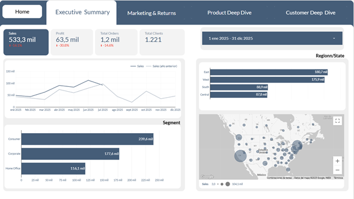
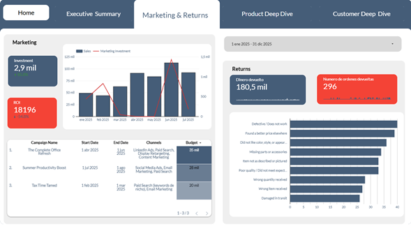
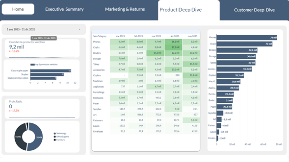
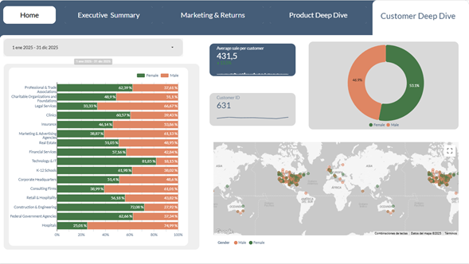
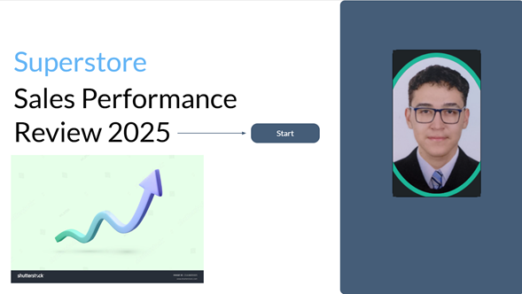
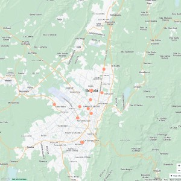

Hola, soy Nicolas Tovar.Caracterizado por ser una persona entusiasta, objetiva y clara. Siempre dispuesta a aprender y mejorar cada día, agrado por el trabajo constante, buen trabajo en equipo y dispuesto siempre a conocer varios puntos de vista, tengo experiencia realizando limpieza de datos, consultas SQL y creacion de dashboard en power BI/looker studio. He apoyado areas de negocio en soporte de datos y reporting operativo mejorando tiempos de preparacion y calidad de la informacion.
Establecer requisitos de la solución de software de acuerdo con estándares y procedimientos técnicos Evaluar requisitos de la solución de software de acuerdo con metodologías de análisis y estándares. Implementar la solución de software de acuerdo con los requisitos de operación y modelos de referencia
Manejo avanzado de SQL: creación de bases de datos, consultas complejas, unión de tablas y optimización del rendimiento. Manipulación y visualización de datos en R: limpieza, transformación, gráficos impactantes y control de flujo con estructuras condicionales. Creación de dashboards interactivos y visuales en Power BI, Looker Studio y Excel, aplicando KPIs y funciones avanzadas (DAX, Power Query). Desarrollo de soluciones de ETL para transformar datos con precisión. Presentación efectiva de resultados mediante visualizaciones claras y personalizadas. Aplicación práctica de herramientas para resolver problemas reales de análisis y toma de decisiones..
Apoyé al área de logística en la entrega y seguimiento de mercancía, garantizando una distribución eficiente. Elaboré informes de indicadores clave de desempeño (KPIs) utilizando Power BI, facilitando la toma de decisiones basada en datos. Posteriormente, en el área de ventas, brindé acompañamiento a clientes durante el proceso de compra de productos en el almacén. Gestioné bases de datos en Excel con información de clientes potenciales, para campañas de seguimiento y fidelización. Participé en la planificación de espacios del hogar mediante el uso de la herramienta interna de diseño, ofreciendo propuestas personalizadas a los clientes.
Recolección y extracción de datos desde diversas fuentes, incluyendo hojas de cálculo en Excel y bases de datos relacionales como SQL y MySQL. Procesamiento y limpieza de datos utilizando herramientas como Excel, R y Python, garantizando la calidad y consistencia de la información. Manejo y administración de bases de datos, especialmente MySQL. Diseñé y desarrollé tableros dinámicos para la visualización de métricas a nivel campaña, facilitando el monitoreo y análisis de resultados en tiempo real.
Implementé automatizaciones para el área de soporte en salud, eliminando tareas manuales realizadas diariamente y en horarios nocturnos. Automatización de contenedores en Azure, permitiendo el envío programado de datos por correo electrónico mediante procesos eficientes y escalables. Realicé limpieza y depuración de datos en listados de PQRSF utilizando SQL y Excel, logrando reducir significativamente el tiempo de preparación semanal. Elaboré manuales e informes para proveedores, facilitando su pago mensual y la evaluación del servicio prestado. Brindé soporte técnico de segundo nivel (N2) en el área comercial sobre aplicativos como SAP, CRM, y otras plataformas empresariales. Realicé validaciones técnicas relacionadas con redes y otros servicios transversales al área comercial






